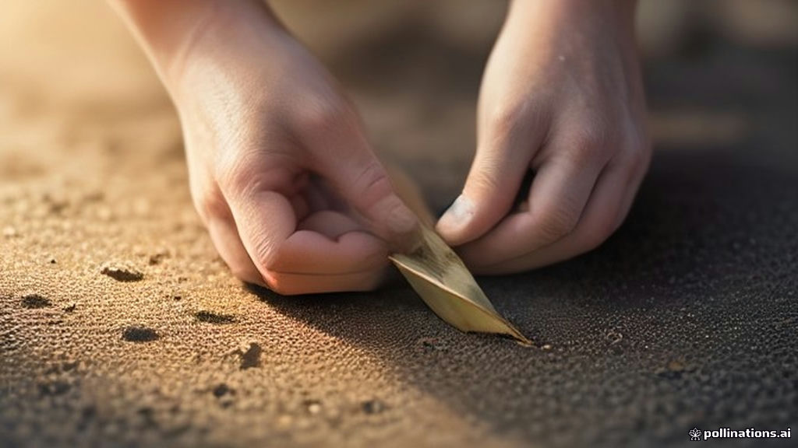

Your Fertiliser Bill Just Got a Helping Hand: Understanding the Rabi Subsidy
TL;DR
- The government has approved a ₹62,370 crore subsidy for phosphatic and potassic (P&K) fertilisers for the upcoming Rabi cropping season.
- This subsidy helps reduce the price farmers pay for essential fertilisers like DAP and MOP.
- It aims to ensure farmers have access to necessary nutrients and protect them from rising international prices.
- The support is for the Rabi 2026-27 season, covering October 2026 to March 2027.
- This move can impact agricultural productivity and, indirectly, your grocery bill.
What's this about?
The Union Cabinet recently approved a significant financial support package, known as the Nutrient-Based Subsidy (NBS), for phosphatic and potassic (P&K) fertilisers. This means the government will spend approximately ₹62,370 crore to help keep the prices of these crucial fertilisers affordable for farmers during the Rabi 2026-27 cropping season. This subsidy aims to ensure that farmers can buy the necessary nutrients for their crops without feeling the full burden of international price fluctuations.
Why it's in the news right now
This decision was made by the Union Cabinet on November 11, 2026. The approval comes just as farmers across India are preparing for the Rabi season, which involves planting crops like wheat, barley, mustard, and various pulses. Ensuring timely and affordable access to fertilisers is crucial for a successful harvest, making this announcement highly relevant for the agricultural sector and the wider economy.
How it actually works
The Nutrient-Based Subsidy (NBS) scheme has been in place since April 1, 2010. Here’s how it works for P&K fertilisers:
- Fixed Subsidy per Nutrient: Instead of subsidising the final price of the fertiliser bag, the government decides a fixed amount of subsidy for each nutrient (like Nitrogen, Phosphorus, Potassium, and Sulphur) present in the fertiliser.
- Manufacturers Claim Subsidy: Fertiliser manufacturers and importers sell P&K fertilisers to farmers at a price that is lower than their actual cost. They then claim the difference, which is the subsidy amount, from the government.
- Market-Driven Prices: Unlike urea, where the Maximum Retail Price (MRP) is fixed by the government, the MRP for P&K fertilisers is decided by the companies. However, because they receive the NBS, they can offer these fertilisers to farmers at a subsidised rate, making them more affordable.
- Rabi Season Allocation: For the Rabi 2026-27 season (October 1, 2026, to March 31, 2027), the government has earmarked ₹62,370.02 crore for this purpose. This is a substantial increase of ₹24,417.73 crore compared to the previous Rabi season, reflecting adjustments made due to international price trends and input costs.
- Types of Fertilisers Covered: The scheme covers 28 grades of P&K fertilisers, including commonly used ones like Di-ammonium Phosphate (DAP) and Muriate of Potash (MOP).
A simple way to think about it
Imagine your local kirana shop owner needs to buy a special kind of flour that is essential for making rotis, but the wholesale price of this flour has gone up a lot. If the shop owner buys it at the high price, they would have to sell rotis at a much higher price to you.
Now, imagine the government steps in and tells the flour mill: "We will pay you a part of the cost for this special flour, so you can sell it to the kirana shop owner at a lower rate."
This is similar to the fertiliser subsidy. The "special flour" is the P&K fertiliser, the "kirana shop owner" is the farmer, and the "flour mill" is the fertiliser manufacturer. The government's subsidy helps the manufacturer sell fertilisers at a reduced price to farmers, so farmers don't have to bear the entire cost of expensive raw materials. This, in turn, helps keep the price of the "rotis" (the food grains grown by farmers) more stable for you.
Why it matters to you
- Stable Food Prices: When fertiliser costs are controlled, farmers' overall expenses for growing crops reduce. This can help prevent a sharp increase in the prices of food grains, vegetables, and other agricultural produce that you buy daily.
- Farmer Income and Productivity: By making essential nutrients affordable, the subsidy supports farmers in maintaining good crop yields. This directly impacts their income and helps ensure agricultural productivity, which is vital for India's food security.
- Reduced Import Dependency: The subsidy indirectly encourages domestic fertiliser production and usage, potentially reducing India's reliance on imported fertilisers, which can be subject to global price volatility.
- Government Spending: This is a significant government expenditure (₹62,370 crore). This amount comes from public funds and is a part of the Union Budget, reflecting the government's priority for the agricultural sector.
- Impact on Rural Economy: A healthy agricultural sector, supported by such subsidies, contributes to the overall stability and growth of the rural economy, impacting livelihoods and consumption patterns in rural India.
Common confusions cleared up
- Myth: The government fixes the price of all fertilisers.
Fact: The government fixes the Maximum Retail Price (MRP) only for urea. For P&K fertilisers, companies set the MRP, but the government provides a fixed Nutrient-Based Subsidy (NBS) per nutrient to make them affordable.
- Myth: Fertiliser subsidies are a new concept.
Fact: The Nutrient-Based Subsidy (NBS) scheme for P&K fertilisers has been operational since April 1, 2010. The government regularly reviews and adjusts the subsidy rates based on international prices and domestic needs.
- Myth: The subsidy directly goes into the farmer's bank account.
Fact: The subsidy is provided to fertiliser manufacturers and importers. They, in turn, sell the fertilisers to farmers at a lower, subsidised price. So, farmers benefit from reduced prices at the point of purchase, rather than receiving a direct cash transfer.
FAQ
What is the Rabi season?
The Rabi season refers to the winter cropping season in India. Crops are sown from October to December and harvested from April to June. Key Rabi crops include wheat, barley, oats, gram, mustard, and linseed.
What are P&K fertilisers?
P&K stands for Phosphatic and Potassic fertilisers. These are essential plant nutrients, specifically Phosphorus (P) and Potassium (K), which are crucial for plant growth, root development, flowering, and overall crop health. DAP (Di-ammonium Phosphate) and MOP (Muriate of Potash) are common examples.
How does the subsidy amount change each year?
The government reviews the Nutrient-Based Subsidy (NBS) rates for P&K fertilisers before each cropping season (Kharif and Rabi). These rates are adjusted based on factors like international prices of raw materials, the exchange rate, and the prevailing market conditions to ensure the fertilisers remain affordable for farmers.
Does this subsidy cover all types of fertilisers?
No, the Nutrient-Based Subsidy (NBS) specifically covers phosphatic and potassic (P&K) fertilisers. Urea, another major fertiliser, has a separate subsidy mechanism where its Maximum Retail Price (MRP) is fixed by the government.
How does this affect the environment?
The Nutrient-Based Subsidy encourages balanced fertilisation, as farmers are incentivised to use P&K fertilisers along with urea. This can help improve soil health and reduce the overuse of a single nutrient, contributing to more sustainable agricultural practices.
Sources
- Press Information Bureau (PIB). "Cabinet approves Rs 62370-crore Nutrient-Based Subsidy for P&K fertilisers for Rabi 2026." November 11, 2026.
- DD News. "Cabinet approves Rs 62,370-crore Nutrient-Based Subsidy for P&K fertilisers for Rabi 2026-27." November 11, 2026.